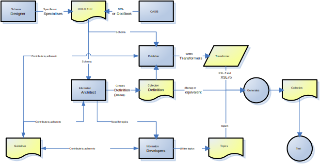

Fundamental to structured authoring is the concept of the
separation of content from presentation and delivery. The way a piece of text
looks during authoring is irrelevant. The formatting and
presentation are post-authoring considerations, and activities possibly not
performed by a technical writer.
DITA has no native presentation format. Tagging within DITA simply
labels what the information is, and not what it looks like. A phrase within a
sentence may be a window name, and that is how it is marked up. This approach
is known as
semantic mark-up. Whether a semantically marked-up phrase
eventually gets displayed in bold, or in red, or in a box, or not at all, is
determined later, outside the authoring process.
Documents are never displayed to the reader in DITA; DITA is not a
presentation format.
Content is almost completely separated from
presentational form and
delivery format. Wherever possible,
context is also separated from
content.
The schematic following shows how this
separation impacts a technical communications team.
Workflow in a DITA authoring environment

In order to make editing friendlier, many DITA editing programs display
the DITA content in a graphical user interface. This approach is described as
WYSIOO - What You See is One Option. What you see as a DITA
author may be nothing like how the reader will perceive the document, but it is
one display option! (WYSIOO is a play on the familiar term
WYSIWYG, or
What You See Is What You Get.)